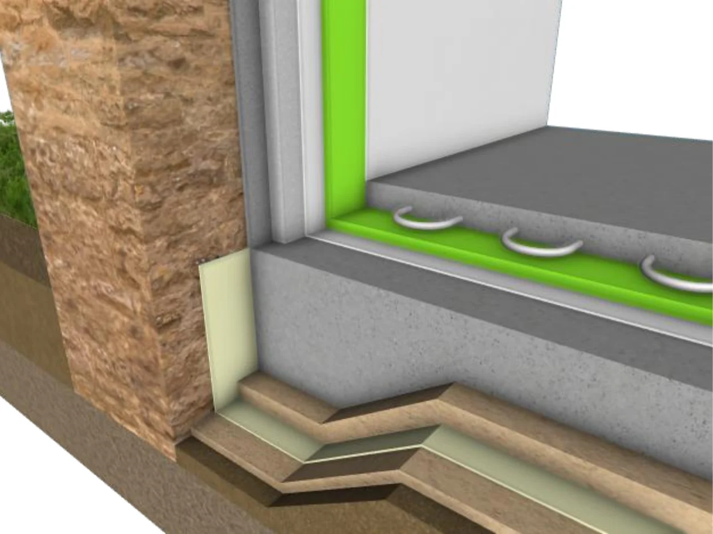

More insulation generally means less heat loss, but internal wall insulation also makes the original masonry colder. That colder masonry can hold moisture for longer, which is why chasing the lowest U-value on a solid wall is not automatically the safest specification. There is no universal safe thickness. Every wall behaves differently depending on its construction, condition and exposure. BreatheTherm combines insulating perlite renders with high-performance aerogel so the thickness can follow the building. The goal is worthwhile thermal improvement without compromising the fabric.
Why more internal insulation makes masonry colder
Heat that used to warm the inner face of the brick or stone now stops in the new lining. The room feels better. The masonry behind runs closer to outside temperature.
That is not a defect. It is physics, and it applies to lime, wood fibre, calcium silicate and foam alike. The defect appears when the interface cannot dry. A vapour-closed board, a sealed gypsum face, or a lining so thick that drying potential collapses, all push moisture risk up as the U-value comes down.
This is the balance breathable insulation is trying to hold: enough thermal resistance to cut heat loss, not so much closed resistance that the wall becomes a cold sponge.
There is no universal safe thickness for solid walls
A 215 mm London stock wall in a sheltered terrace is not a 600 mm rubble wall on a west-coast gable. Pointing, previous cement facing, existing plaster, floor junctions and indoor humidity all change the picture.
Rules of thumb from product literature assume a wall that matches the test. Traditional buildings rarely do. That is why reading a wall before specifying thickness comes before any millimetre on a drawing.
Exposure is the variable people skip. Wind-driven rain on the outer face, plus a colder inner face after insulation, is the classic moisture trap. A lining that is comfortable on a sheltered elevation can be the wrong lining on the weather elevation of the same house.
U-values BreatheTherm can reach on solid masonry
Depending on the thickness available and the existing wall, BreatheTherm systems can achieve U-values between 0.17 and 0.45 W/m²K.
A typical 50 mm PerliTherm build-up on a 215 mm solid brick wall achieves approximately 0.35 W/m²K. Lambda is 0.064 W/m·K. Sd is 0.2 to 0.4 m, so the coat stays vapour-open at that thickness.
Where reveals, panelling or listed joinery limit the build-up, 10 mm AeroGel (lambda 0.017 W/m·K) is the extra layer. Combined with PerliTherm in the wall plane, constrained reveals can reach around 0.17 W/m²K. That is not a promise for every junction. It is what the products can do when the geometry allows.
PerliScratch is not there to chase the U-value. It is the keyed lime-perlite coat that lets the insulating body grip masonry without a vapour-closed adhesive.
How hygrothermal modelling tests a proposed thickness
A U-value is a steady-state heat-loss figure. It does not tell you whether the wall dries in January after a week of rain. Hygrothermal assessment does that job. It looks at heat and moisture together, over time, for a specific build-up.
WTA 6-4 is the planning guideline for internal insulation and moisture. WTA 6-5 is the numerical counterpart. We use those principles when a specification is not obvious: thick linings, severe exposure, mixed fabric, or a conservation officer who has asked the question properly.
Modelling is not a substitute for a dry wall. If the masonry is already wet, or the pointing is cement on three elevations, you repair that first. The model then tests the lining you actually intend to apply.
Part L, EPCs and what a traditional wall can honestly achieve
Part L sets the energy efficiency rules in the Building Regulations. Existing buildings are not new dwellings, and historic fabric has provisions that recognise that a listed or traditional wall cannot always take a new-build U-value.
An EPC will still ask for a number. That number should describe a build-up the wall can carry. A vapour-closed lining that looks good on the certificate and wets the joist ends is not compliance in any sense that matters to the building.
If you are specifying, say what U-value the chosen thickness delivers on that wall, and say what moisture evidence sits behind it. The architect pack is set up for that conversation. Occupiers can book a free assessment and get a site-specific figure instead of a catalogue one.
Specifying thickness without trapping moisture
Keep the lining vapour-open. That is the first control, before millimetres. Then choose thickness from the wall, the exposure and the room, not from a target copied off a new house.
Use PerliTherm in the plane where 50 mm is acceptable. Use AeroGel where it is not. Do not thicken a closed system to "make the U-value work". Walk the stack in the internal wall layer guide so every coat has a job.
If the risk is unclear, model it. If the building is listed, pair this note with internal insulation and listed building consent. The U-value is one output of a good specification. It is not the specification.